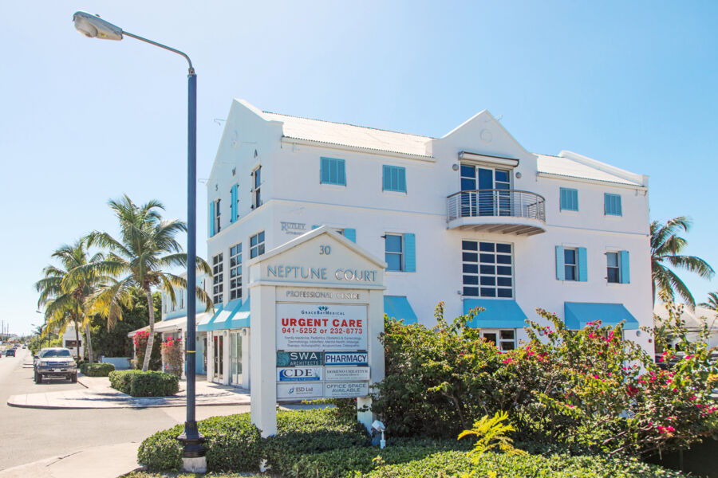
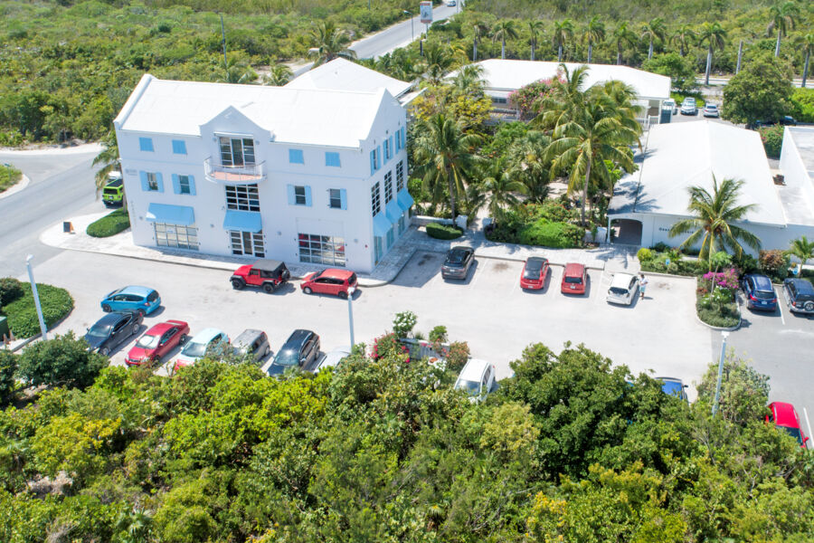
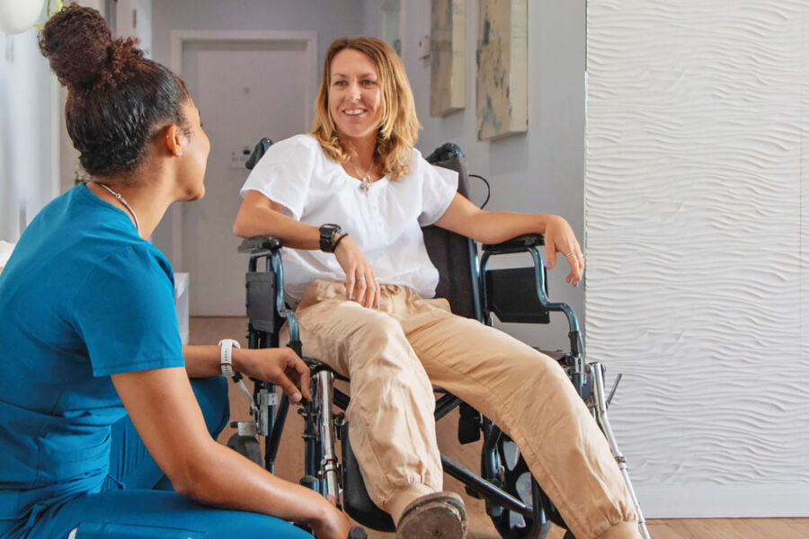
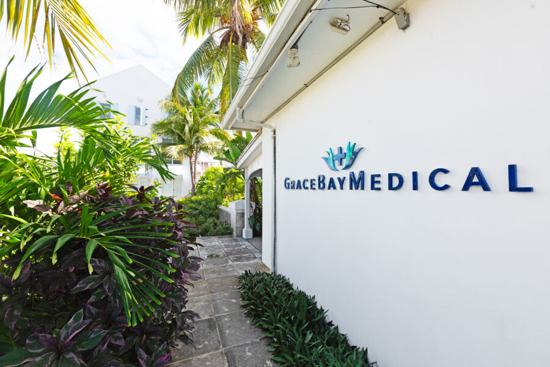
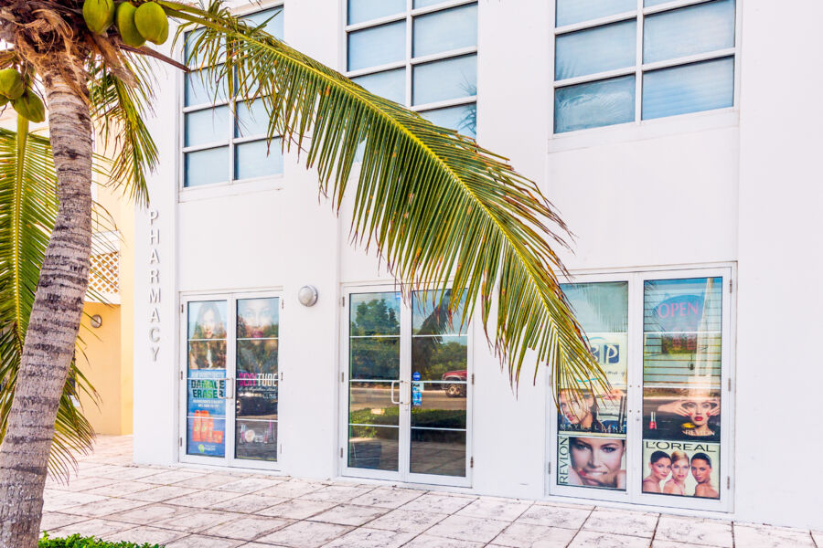
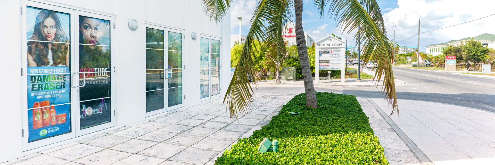

what happened?
Tap what happened to see where you'll go inside the clinic. Urgent care takes walk-ins, no appointment needed.
a coral cutwalk in

- front desk
- doctor
- x-ray (not needed)
- lab (not needed)
- pharmacy
- rentals (not needed)
Cuts and scrapes from coral or rocks go to the minor injuries unit, run by our emergency room doctors. Walk in; no appointment needed.
Bring photo ID or your passport, and your insurance card if you have one.
a bad sprainx-ray onsite
- front desk
- doctor
- x-ray
- lab (not needed)
- pharmacy
- rentals
A doctor checks it and the onsite X-ray shows whether anything is broken. Crutches and wheelchairs can be rented before you leave.
swimmer's earwalk in
- front desk
- doctor
- x-ray (not needed)
- lab (not needed)
- pharmacy
- rentals (not needed)
Ear pain after the sea or the pool? A doctor will take a look, and anything you're prescribed is filled at Grace Bay Pharmacy in the same complex.
a sunburnwalk in

- front desk
- doctor
- x-ray (not needed)
- lab (not needed)
- pharmacy
- rentals (not needed)
A blistering burn, heat rash or a reaction on the skin is seen as a walk-in, and our dermatology team takes appointments for anything that needs a closer look.
a feverlab onsite

- front desk
- doctor
- x-ray (not needed)
- lab
- pharmacy
- rentals (not needed)
Fevers, coughs and stomach bugs are seen as walk-ins. If you need tests, the lab is in-house, so there's no second trip.
a sick childpediatrics

- front desk
- doctor
- x-ray (not needed)
- lab
- pharmacy
- rentals (not needed)
Our team includes pediatrics. Walk in for anything urgent, or call to book with a children's doctor.
a refillpharmacy here

- front desk
- doctor
- x-ray (not needed)
- lab (not needed)
- pharmacy
- rentals (not needed)
Forgot or ran out of your medicine? A doctor can write a new prescription and Grace Bay Pharmacy fills it in the same complex.
Bring the bottle or the label if you have it.
a work permitbook ahead

- front desk
- doctor
- x-ray (not needed)
- lab
- pharmacy (not needed)
- rentals (not needed)
Migrant Health Evaluations for work permit applications, with all the testing done in-house. Call to book a time.
Bring photo ID.
Chest pain, trouble breathing or bleeding that won't stop? Call 911 now.
start to finish
walk in
No appointment needed for urgent care. Tell the front desk what happened.
wait in the garden
The veranda seats face the courtyard palms, a few steps from the door.
leave sorted
X-ray, the lab, rentals and the pharmacy are all at Neptune Court.
the islands' largest private practice
15
doctors, including two emergency room doctors who run urgent care
35
years Dr. Sam Slattery has practiced in the islands
4.7
stars on Google
About Grace Bay Medical
Grace Bay Medical is the largest private medical practice in the Turks and Caicos Islands, led by Dr. Sam Slattery, who has practiced here for 35 years. Fifteen doctors work from Neptune Court on Allegro Road, including two emergency room doctors who run urgent care and the minor injuries unit. Under the same roof are internal and family medicine, women's health, pediatrics and dermatology, along with a naturopathic doctor, an acupuncturist and a medical massage therapist. X-ray, advanced ultrasound and an in-house lab keep tests close, and Grace Bay Pharmacy is in the same complex. Visitors get a fast-track walk-in service, and on special request a doctor can come to your villa or hotel room. Walk in, or call ahead and we'll be ready.
before you come
Do I need an appointment?
Not for urgent care: walk in and we'll see you. For our specialists, calling ahead is recommended so the right doctor is free.
When are you open?
Monday to Friday 8 am to 6 pm, Saturday 8:30 am to 4 pm and Sunday 9 am to 1 pm. Outside those hours the emergency line answers 24 hours: 649 232 8773.
Can a doctor come to my villa or hotel?
Yes, on special request. Call the emergency line, 649 232 8773, and tell us where you're staying.
Do you have X-ray and a lab?
Yes. X-ray, advanced ultrasound and an in-house laboratory are all at Neptune Court, so tests don't mean another trip across the island.
Where do I fill a prescription?
Grace Bay Pharmacy is in the same complex, open Monday to Saturday from 8 am to 6 pm.
Can I rent crutches or a wheelchair?
Yes. We rent wheelchairs, crutches and oxygen concentrators.
Do you do work permit medicals?
Yes. We carry out Migrant Health Evaluations for work permit applicants, with all the testing done in-house. Call 649 941 5252 to book.
What should I bring?
Photo ID or your passport, your insurance card if you have one, and a list of any medicines you take.
What if it's an emergency?
For chest pain, trouble breathing, a serious injury or heavy bleeding, call 911. For anything urgent that can't wait for the morning, call our emergency line, 649 232 8773, at any hour.
a short walk from
Neptune Court sits in central Grace Bay, within walking distance of these resorts and stops.
Seven Stars
The Ritz-Carlton
Ports of Call
Graceway Gourmet
The Hub
get directionsFind us
neptune court
grace bay, providenciales
mon–fri 8–6, sat 8:30–4, sun 9–1